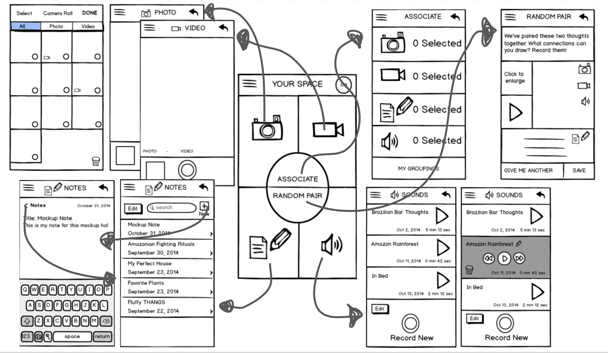

Three students and I designed the interface for a mobile app (under a general theme of self-discovery) that would allow people to strengthen their creative skills, as part of CS147, Stanford's Intro to Human-Computer Interaction course.
Our Mission
We aimed to aid the process of self-discovery through strengthening creative intuition. It will help users ignite a spark of inspiration and offer them an effortless way to think about ordinary things in a new perspective.
What's the Problem?
Creativity is the foundation for problem-solving. But there exists the notion that creativity is an innate skill that one is either born with or without. In many team brainstorming scenarios and project meetings, idea generation often comes to a stagnant halt, whether it's due to exhausted ideas, unfocused minds, fixed attention spans, or something other. This is natural. Running into blocks is inevitable. The real problem is when we can't figure out how to get past those blocks and get unstuck in our ideas. With Id8, we are building creative confidence and revolutionizing the way we think. Generate wild ideas, defer judgement, and think out of the box.
Brainstorming and User Research
We interviewed an intercollegiate debate coach, a professional dancer, and a student studying industrial design at the University of Oregon to gather observations on how people viewed creativity. We found that at the core, at moments of mental roadblocks, all three participants reset in their own ways. Whether that be a walk outside, stepping away from the problem, or doing another activity entirely, they naturally knew when they needed a break from their work. After some time, they typically return to their task when they deem their break to be enough time, when an idea hits them, or when they are pressed for time. We thought, let's optimize the inevitable break time that people already take and get them back on track full of fresh ideas.
Initial Information Flow
It was time to start sketching some potential ideas. Nothing was concrete, and nothing was organized. We just basically brain dumped In this part of our process, we encouraged any and all ideas, occasionally joking about our museum worthy drawing skills.
Low-fi Prototypes
First, we created an experience prototype to show how Id8 would play a role in someone's life. Our user is between 18 and 30 years old in the professional field. Afterwards, it was time to take some index cards and a sharpie, and get in the field!
After some intiial user testing, we refined our low-fi prototypes to change some ideas around, still keeping it low-fi so we can receive feedback on navigation, information flow, and higher level concepts.
